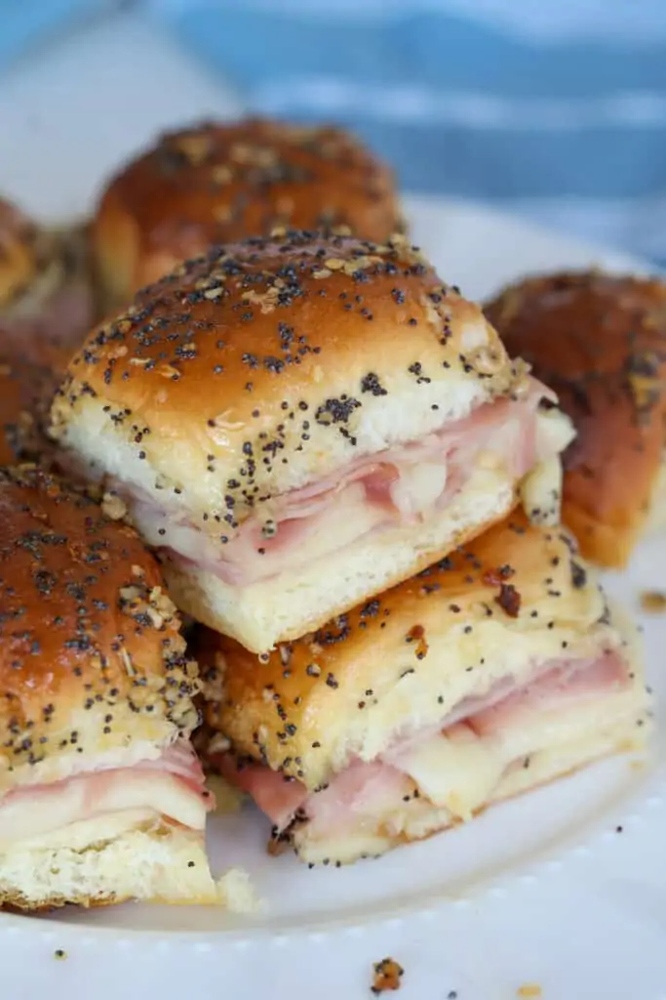

Ham and Cheese Sliders

Ham and cheese party sliders. Serve warm.
Ingredients
- 1 (12 count) package Hawaiian sweet rolls
- 1 (6 ounce) package thinly sliced deli ham
- 3/4 pound Swiss cheese
- 1/2 cup unsalted butter
- 1 tablespoon Dijon mustard
- 1 tablespoon poppy seeds
- 2 teaspoons Worcestershire sauce
- 2 teaspoons dried minced onion
- 1/4 teaspoon salt
- 1/4 teaspoon ground black pepper
Directions
- Preheat the oven to 350 degrees F (175 degrees C). Line a 9-inch square baking pan with
aluminum foil and spray with cooking spray.
- Slice attached rolls in half widthwise with a serrated knife, keeping rolls connected,
into a bottom and top slab. Place bottom slab in the prepared pan.
- Layer about half the ham evenly over the bottom slab of rolls. Layer Swiss cheese evenly
on top, and arrange remaining ham over the cheese. Cover with the top slab.
- Place butter in a microwave-safe bowl. Heat in the microwave until melted, about 1 minute.
Add mustard, poppy seeds, Worcestershire sauce, onion, salt, and pepper. Whisk to combine.
- Pour butter mixture evenly and slowly over the rolls. Spread over the tops using a spatula;
some of the mixture will pool at the base of the rolls. cover with aluminum foil and let
stand at room temperature for 5 to 10 minutes.
- Bake in the preheated oven until cheese has melted, about 20 minutes. Uncover and continue
baking until browned as desired, 3 to 5 minutes more. Slice into individual sliders.
Cook's Note:
Baking time will vary based on the size of pan used, climate, and oven variances, etc. Bake until
as done as desired; watch to make sure they don't burn since all ovens and ingredients vary.